Never Odd or Even
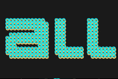
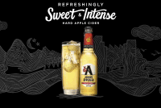
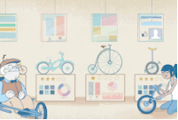
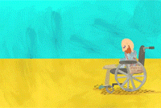
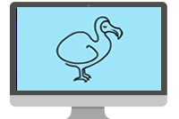
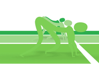
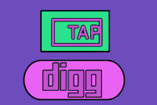
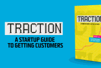
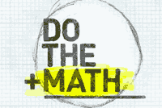
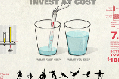
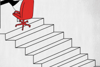
Hi!
I'm Eve Weinberg
I'm a Interactive Motion Graphics Director who leverages emerging technology
Never Odd or Even
Documentary
Corporate
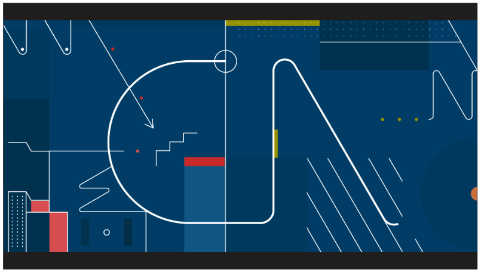 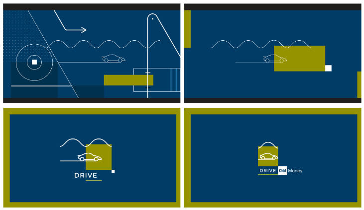 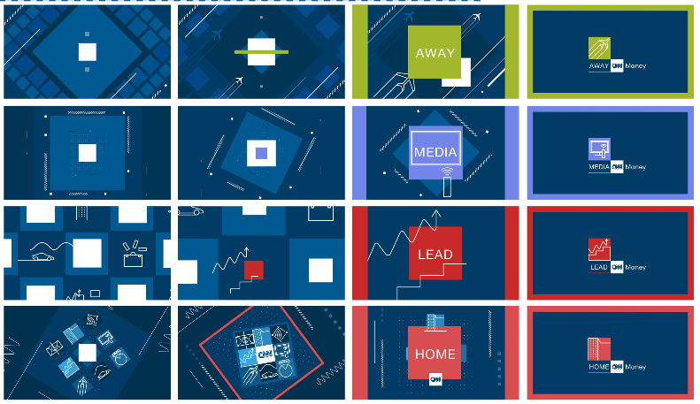2) NowThis
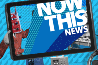Installation
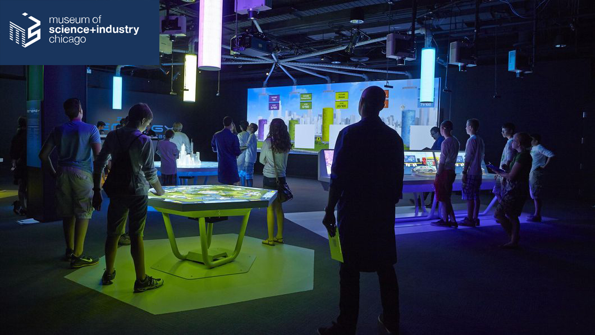 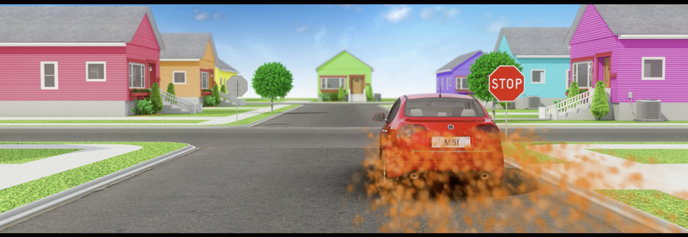 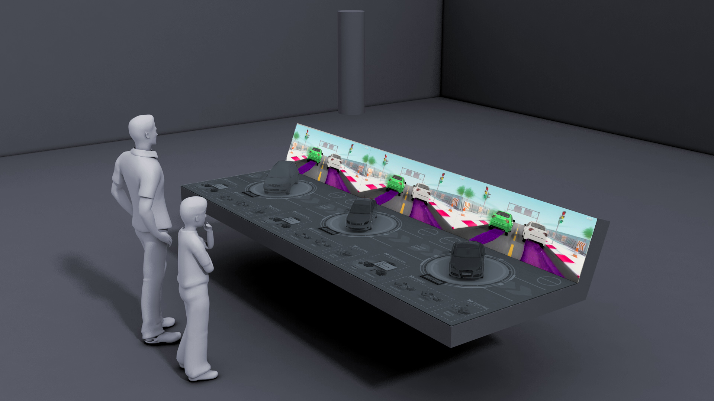 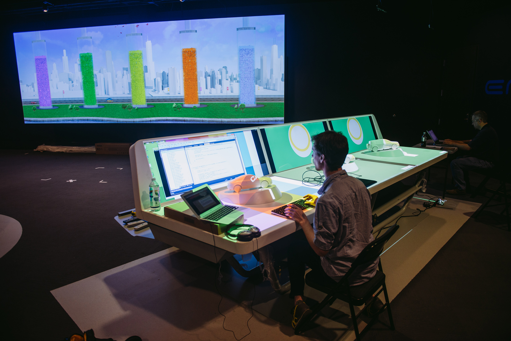 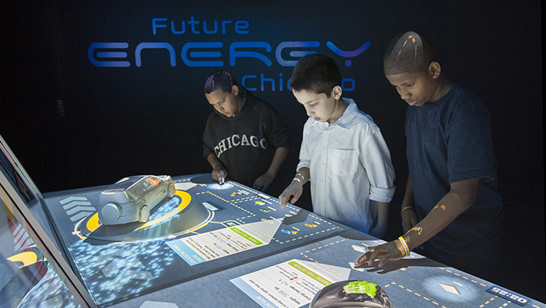 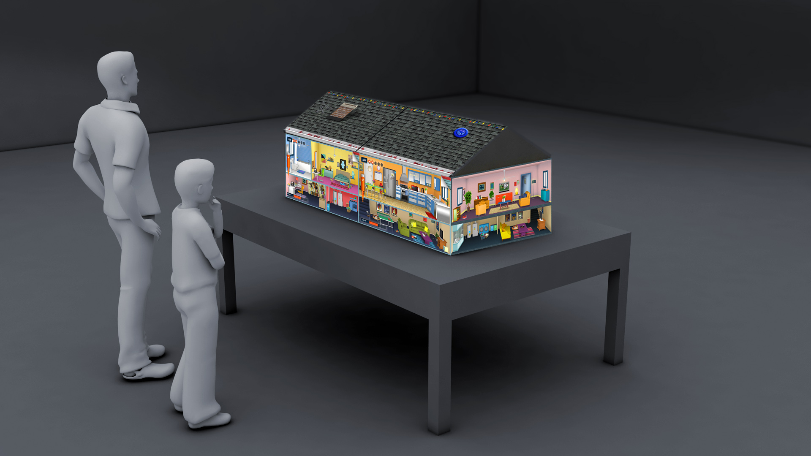 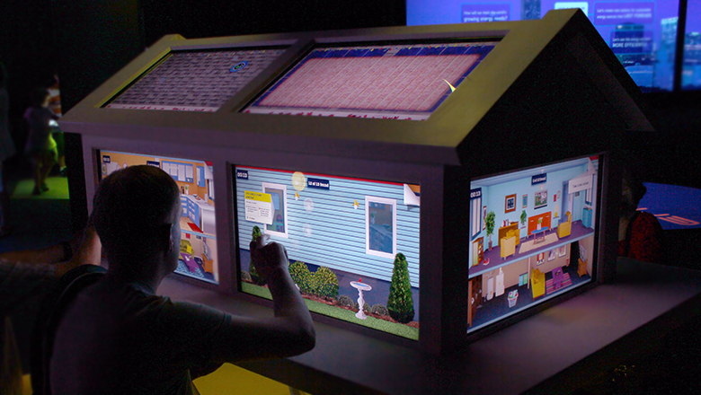 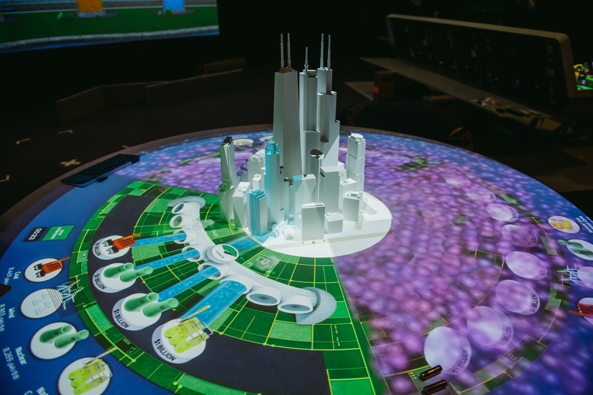 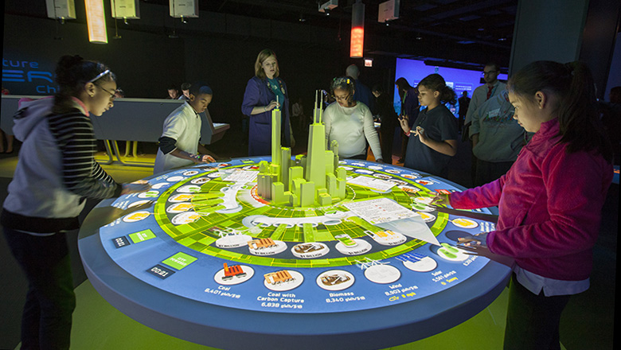 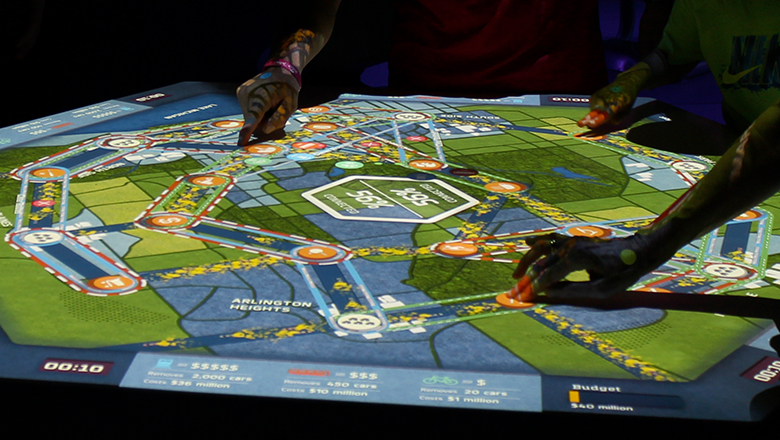 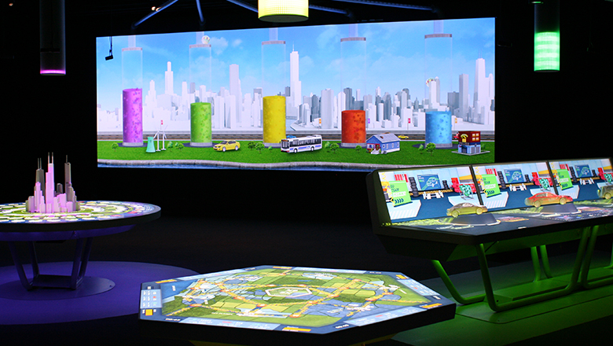Thesis // Goals
Questions:
1: When can UX be made stronger with animation?
2: When is animation stronger with Interaction?
Learn:
(i) workflow,
(ii) methodology,
(iii) philosophy
about animation on the web.
UX 💗 Animation
Thesis // Package
1: Research Animated UX
2: Engineer Solutions with code
3: Package them into a library
X
1
2
3
4
5
6
7